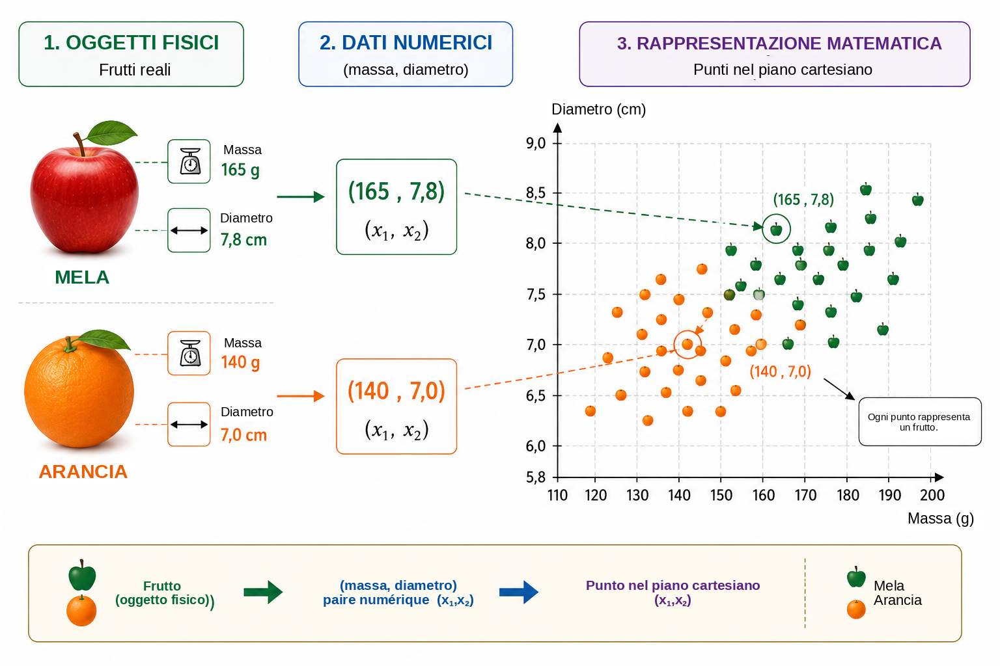
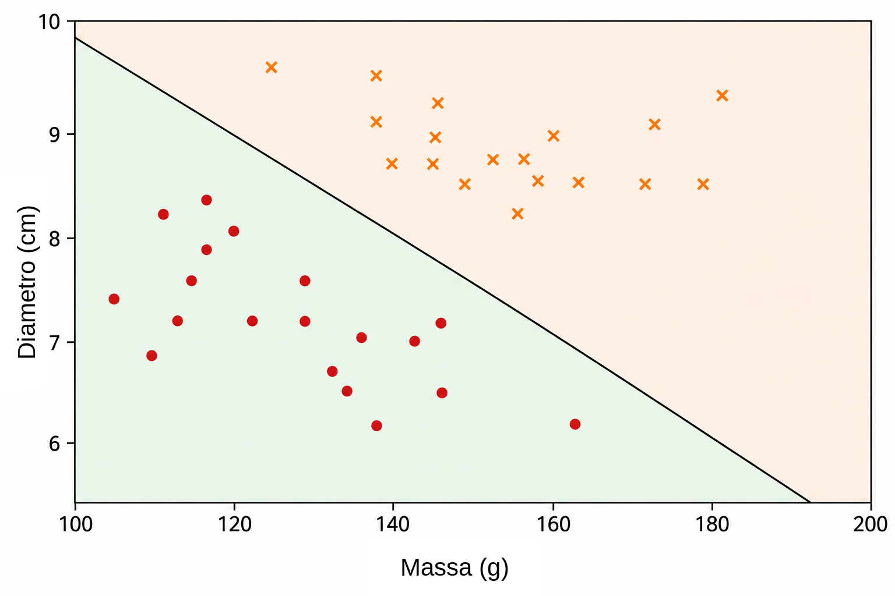
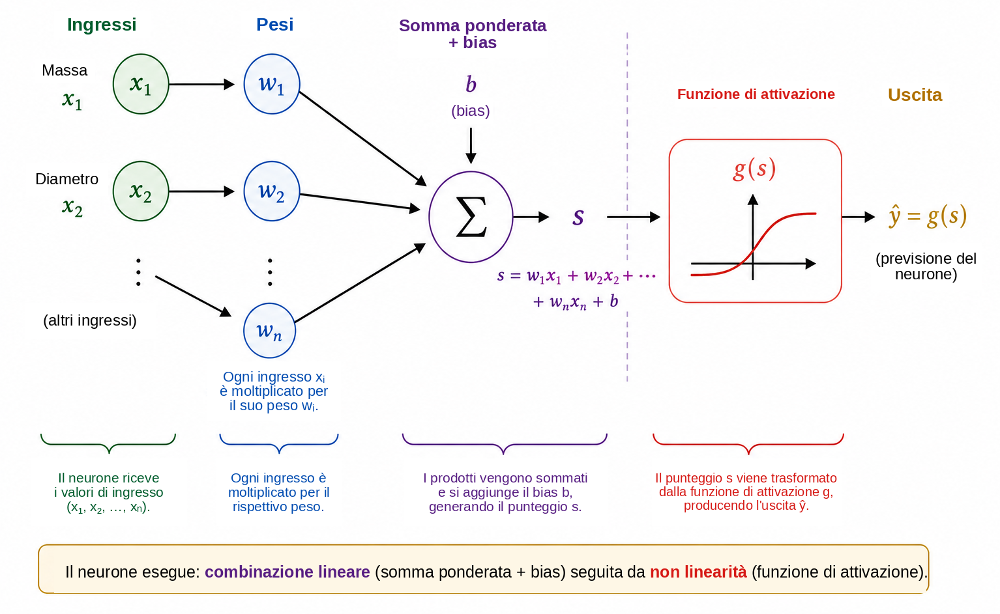
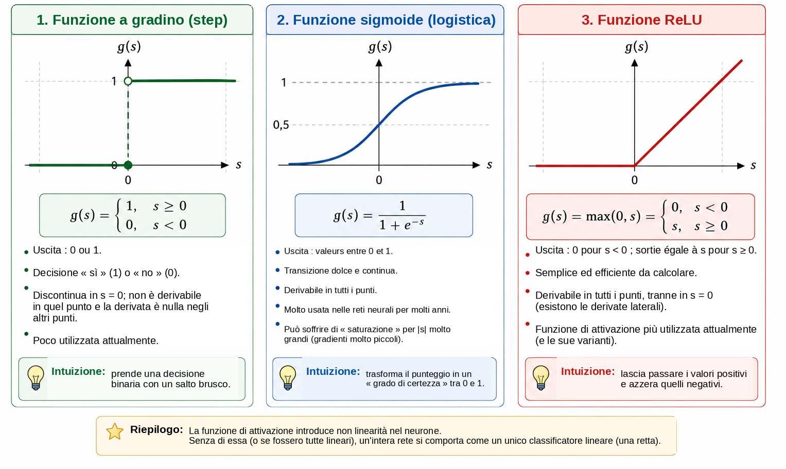
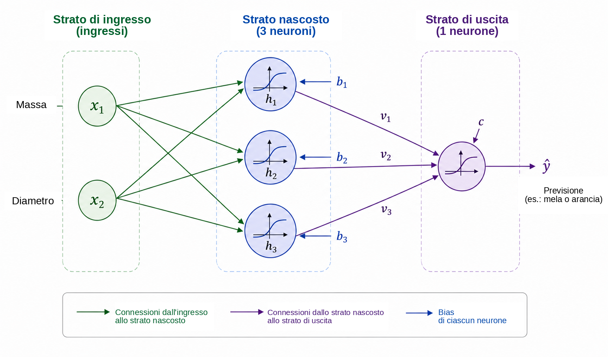
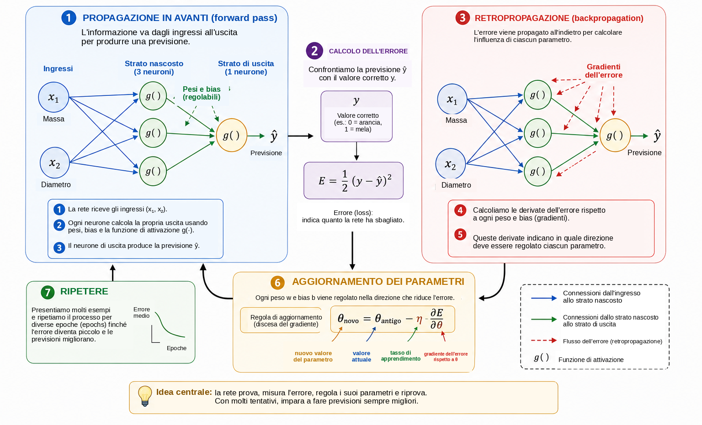
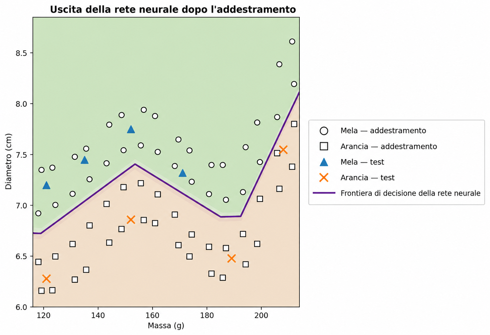

Quando può imparare un computer?
Nella vita quotidiana prendiamo decisioni di classificazione quasi senza rendercene conto. Osservando un frutto, lo identifichiamo rapidamente come una mela o un’arancia; quando arriva un messaggio sul telefono, distinguiamo una conversazione legittima da una pubblicità indesiderata; in un’analisi medica, diverse misure possono essere combinate per supportare una decisione; e, negli istituti finanziari, vengono valutati numerosi dati prima di concedere un credito. In tutti questi esempi, più caratteristiche vengono considerate congiuntamente per produrre una risposta.
In molti programmi informatici tradizionali, le regole che producono questa risposta sono scritte esplicitamente dal programmatore. Questo approccio funziona bene quando le regole sono note e possono essere formulate con chiarezza. Diventa meno efficace quando i dati sono molto variabili o quando è difficile stabilire in anticipo tutte le condizioni necessarie per una buona decisione. Ciò conduce a una domanda naturale:
Possiamo costruire un programma che impari una regola decisionale
dagli
esempi, invece di ricevere la regola in anticipo?
Questa è una delle idee centrali dell’apprendimento automatico, un’area dell’intelligenza artificiale dedicata a metodi che adattano modelli a partire dai dati . In un problema di apprendimento supervisionato, l’algoritmo riceve esempi insieme alle risposte corrette e cerchiamo un modello capace di produrre previsioni utili anche per casi che non sono stati utilizzati durante l’addestramento. Tra i numerosi modelli sviluppati a questo scopo, le reti neurali artificiali hanno acquisito grande importanza in applicazioni quali il riconoscimento di immagini, l’elaborazione del linguaggio, l’analisi di segnali e la previsione di serie temporali .
L’uso delle reti neurali come ponte tra matematica, informatica e didattica scolastica è già stato discusso in Professor de Matemática Online da Batista e Martins , che presentano un’attività comprendente formazione degli insegnanti, Python e riconoscimento di cifre. Il presente articolo segue un percorso complementare. Il nostro obiettivo principale è esporre la matematica interna di una piccola rete neurale, partendo dalla geometria analitica e procedendo passo dopo passo fino al calcolo dei gradienti e a un’implementazione manuale della retropropagazione.
Nonostante la sofisticazione delle applicazioni moderne, il nucleo matematico di una rete neurale può essere introdotto mediante idee relativamente familiari. A un livello elementare, una rete neurale è una composizione di funzioni i cui parametri vengono adattati a partire dai dati. Iniziamo con un semplice problema geometrico, reinterpretando una retta separatrice come un neurone artificiale; colleghiamo poi più neuroni, studiamo il ruolo delle funzioni di attivazione e mostriamo come le derivate possano essere utilizzate per regolare automaticamente i parametri della rete. Infine, implementiamo in Python un esempio piccolo ma completo, mantenendo una corrispondenza diretta tra le equazioni e il codice.
Rappresentazione matematica del problema
Per comprendere il funzionamento di una rete neurale, iniziamo con un problema volutamente semplice: distinguere le mele dalle arance. Un frutto possiede molte caratteristiche che potrebbero essere utili per questo compito, come il colore, la massa, il diametro, la consistenza e l’aroma. Tuttavia, un primo modello matematico non deve necessariamente includere tutta questa complessità. Utilizzeremo soltanto due grandezze facili da misurare: la massa, in grammi, e il diametro, in centimetri.
Pertanto, ogni frutto sarà rappresentato da una coppia ordinata \[(x_1,x_2),\] dove \[x_1=\text{massa} \qquad\text{e}\qquad x_2=\text{diametro}.\]
Così, la coppia \((155,\;7.2)\) rappresenta un frutto con massa di \(155\) g e diametro di \(7.2\) cm. Sostituendo l’oggetto fisico con due misure numeriche, associamo ogni frutto a un punto del piano cartesiano: la prima coordinata indica la massa e la seconda il diametro. La Figura 1 illustra questa rappresentazione per un insieme ipotetico di mele e arance.

Questa trasformazione cambia la natura apparente del problema. Invece di chiedere direttamente come riconoscere una mela o un’arancia, possiamo formulare una domanda geometrica: come separare nel piano i punti appartenenti alle due classi? Questo cambiamento di prospettiva è fondamentale nell’apprendimento automatico. Immagini, testi, suoni e segnali sperimentali devono essere convertiti in rappresentazioni numeriche prima di poter essere elaborati da un algoritmo. Nel nostro esempio, ogni oggetto ha soltanto due coordinate; nelle applicazioni reali, una rappresentazione può contenere centinaia, migliaia o perfino milioni di componenti. Il principio rimane lo stesso: ogni esempio è associato a una collezione di numeri e il modello cerca una regola che trasformi tale rappresentazione nella risposta desiderata.
Iniziamo dalla regola geometrica più semplice disponibile e ci chiediamo se una sola retta possa separare adeguatamente i punti corrispondenti alle mele da quelli corrispondenti alle arance.
Una retta come classificatore
Una volta rappresentato ogni frutto mediante un punto del piano cartesiano, la classificazione diventa un problema geometrico: può una retta separare le mele dalle arance? Questa domanda esprime l’idea fondamentale di un’importante famiglia di metodi di apprendimento automatico noti come classificatori lineari.
Consideriamo una retta che attraversa la nuvola di dati, come illustrato nella Figura 2. La retta divide il piano in due semipiani. Se la maggior parte dei punti corrispondenti alle mele si trova da un lato e la maggior parte dei punti corrispondenti alle arance dall’altro, la posizione di un nuovo frutto rispetto alla retta può essere utilizzata come regola di classificazione. Dopo averne misurato massa e diametro, rappresentiamo il frutto con un punto e determiniamo da quale lato della retta si trovi tale punto.

Nel piano cartesiano \((x_1,x_2)\), una retta può essere descritta da \[w_1x_1+w_2x_2+b=0, \qquad (w_1,w_2)\neq(0,0).\]
Il vettore \((w_1,w_2)\) è perpendicolare alla retta e ne determina quindi l’orientamento, mentre il parametro \(b\) contribuisce a determinarne la posizione. Questa rappresentazione presenta una piccola ridondanza: moltiplicare \(w_1\), \(w_2\) e \(b\) per una stessa costante non nulla produce esattamente la stessa retta. Di conseguenza, i parametri che descrivono la frontiera non sono unici. Anche la loro interpretazione numerica dipende dalla scala delle variabili. Poiché la massa è misurata in grammi e il diametro in centimetri, i valori numerici di \(w_1\) e \(w_2\) non devono essere confrontati senza considerare le diverse unità.
La stessa equazione della retta fornisce un modo semplice per determinare da quale lato della frontiera si trovi un punto. Definiamo il punteggio \[s(x_1,x_2)=w_1x_1+w_2x_2+b.\]
Se \(s(x_1,x_2)=0\), il punto si trova sulla retta. Se \(s(x_1,x_2)>0\), si trova in un semipiano; se \(s(x_1,x_2)<0\), si trova nell’altro. Se decidiamo che i punteggi positivi corrispondono alle mele e quelli negativi alle arance, la regola diventa \[\begin{cases} s(x_1,x_2)\geq 0 & \Longrightarrow \text{mela},\\ s(x_1,x_2)<0 & \Longrightarrow \text{arancia}. \end{cases}\]
Per esempio, consideriamo la frontiera definita da \[w_1=\frac{1}{10}, \qquad w_2=2, \qquad b=-30.\] Per un frutto con massa di \(160\) g e diametro di \(7.8\) cm, \[\begin{aligned} s &=\frac{1}{10}\times160+2\times7.8-30\\ &=16+15.6-30\\ &=1.6. \end{aligned}\] Poiché il punteggio è positivo, il punto si trova nel semipiano che associamo alle mele. Pertanto, questo classificatore etichetterebbe il frutto come una mela.
Non ogni scelta di \(w_1\), \(w_2\) e \(b\) produce una buona classificazione. Alcune rette separano male i due gruppi, mentre altre commettono meno errori. Il problema di apprendimento consiste precisamente nell’utilizzare esempi già etichettati per determinare valori dei parametri che riducano una misura dell’errore del modello. Invece di programmare direttamente la posizione della retta, vogliamo che l’algoritmo ne adatti i coefficienti a partire dai dati.
Una sola retta può funzionare bene quando le classi sono approssimativamente separabili linearmente. Insiemi di dati più complessi possono richiedere una frontiera non lineare. Prima di affrontare questa limitazione, reinterpretiamo il classificatore appena costruito come un’unità computazionale elementare: un neurone artificiale.
Il neurone artificiale
Nella sezione precedente, l’espressione \[s=w_1x_1+w_2x_2+b\] è stata utilizzata per determinare da quale lato di una retta si trovi un frutto. La stessa espressione può essere considerata come la prima fase del calcolo eseguito da un neurone artificiale. Un neurone riceve ingressi numerici, li combina usando pesi e un bias, quindi applica una funzione matematica per ottenere la propria uscita.
Nel nostro esempio, gli ingressi sono la massa \(x_1\) e il diametro \(x_2\). Ogni ingresso viene moltiplicato per un parametro chiamato peso; i prodotti vengono sommati insieme a un termine costante \(b\), chiamato bias. La Figura 3 mostra schematicamente questo calcolo.

I pesi determinano come le variazioni degli ingressi influenzano il punteggio. Se \(x_2\) e tutte le altre quantità rimangono fisse, una variazione \(\Delta x_1\) modifica \(s\) di \(w_1\Delta x_1\). Analogamente, una variazione \(\Delta x_2\) modifica il punteggio di \(w_2\Delta x_2\). Anche il segno è importante: un peso positivo fa sì che un aumento dell’ingresso aumenti il punteggio, mentre un peso negativo produce l’effetto opposto. Questa interpretazione deve essere usata con cautela quando le variabili hanno unità e scale diverse. Per questo motivo, le implementazioni pratiche spesso normalizzano o standardizzano i dati di ingresso prima dell’addestramento.
Il bias \(b\) è il termine costante della trasformazione affine. Geometricamente, permette di traslare la frontiera di decisione. Se \(b=0\), l’equazione \[w_1x_1+w_2x_2=0\] obbliga la retta a passare per l’origine. Con un bias, la frontiera può essere spostata in altre posizioni. Equivalentemente, quando \(x_1=x_2=0\), il punteggio è semplicemente \(s=b\).
Il punteggio non deve necessariamente essere l’uscita finale del neurone. In generale, gli si applica una funzione di attivazione \(g\): \[\widehat{y}=g(s)=g\left(w_1x_1+w_2x_2+b\right).\] Il calcolo avviene quindi in due fasi, \[\begin{aligned} s &= w_1x_1+w_2x_2+b,\\[4pt] \widehat{y} &= g(s). \end{aligned}\]
Utilizzando i valori dei parametri della sezione precedente otteniamo \(s=1.6\). Se scegliamo la funzione a gradino \[g(s)= \begin{cases} 1, & s\geq0,\\ 0, & s<0, \end{cases}\] allora \(\widehat{y}=g(1.6)=1\). Secondo la nostra convenzione, il frutto viene classificato come una mela. Con questa attivazione, la decisione cambia quando \(s\) attraversa lo zero, quindi la frontiera tra le classi è esattamente \[w_1x_1+w_2x_2+b=0.\]
Un singolo neurone è quindi un oggetto matematico semplice con parametri regolabili. La sua vera importanza emerge collegando molte unità di questo tipo. Prima di costruire una rete, tuttavia, dobbiamo comprendere perché la funzione di attivazione sia essenziale.
Perché abbiamo bisogno di una funzione di attivazione?
Un neurone calcola dapprima un punteggio mediante una trasformazione affine e soltanto dopo applica una funzione di attivazione. Questa seconda fase è essenziale affinché una rete neurale possa rappresentare relazioni complesse. Per capire perché, immaginiamo una rete in cui non vengano utilizzate funzioni di attivazione. Ogni unità avrebbe allora la forma \[y=w_1x_1+w_2x_2+b.\]
Per un’illustrazione unidimensionale, supponiamo che una prima unità produca \[h=ax+b\] e una seconda calcoli \[y=ch+d.\] La sostituzione fornisce \[y=c(ax+b)+d=acx+(cb+d),\] che è ancora una funzione affine di \(x\). La stessa affermazione vale in più dimensioni: una composizione di trasformazioni affini rimane affine. Pertanto, aggiungere molti strati senza un’operazione non lineare non rende la rete fondamentalmente più espressiva; l’intera composizione potrebbe essere sostituita da una sola trasformazione affine.
Una funzione di attivazione rompe questa limitazione. Dopo aver calcolato il punteggio \(s\), il neurone applica una mappa, normalmente non lineare, \[h=g(s).\] Quando si collegano più unità di questo tipo, la composizione risultante non può più essere ridotta a una singola trasformazione affine. Ciò permette alla rete di costruire frontiere di decisione più complesse.
L’attivazione più semplice è la funzione a gradino, \[g(s)= \begin{cases} 1, & s\geq0,\\ 0, & s<0. \end{cases}\] Produce una decisione binaria ed è molto utile per comprendere la classificazione. Tuttavia, la sua derivata è zero per \(s\neq0\) e non è definita in \(s=0\). Poiché l’addestramento basato sul gradiente utilizza le derivate per determinare come debbano cambiare i parametri, la funzione a gradino non è adatta a questo meccanismo di addestramento.
Un’alternativa è la funzione sigmoide, \[\sigma(s)=\frac{1}{1+e^{-s}}.\] Essa trasforma ogni numero reale in un valore strettamente compreso tra \(0\) e \(1\). Per valori molto negativi di \(s\), l’uscita si avvicina a \(0\); per valori molto positivi, si avvicina a \(1\); tra i due estremi, la transizione è regolare. La sigmoide è derivabile in ogni punto e \[\sigma'(s)=\sigma(s)\bigl(1-\sigma(s)\bigr).\] Poiché le sue uscite sono comprese tra \(0\) e \(1\), viene spesso utilizzata nello strato di uscita di un classificatore binario. In una formulazione probabilistica e con una funzione di perdita appropriata, l’uscita può essere interpretata come una stima della probabilità della classe rappresentata da \(1\). Negli strati nascosti, tuttavia, la sigmoide può creare una difficoltà: per ingressi di grande modulo, la sua derivata diventa molto piccola, contribuendo al problema del gradiente evanescente nelle reti profonde.
Un’attivazione molto utilizzata negli strati nascosti è ReLU (Rectified Linear Unit), \[\operatorname{ReLU}(s)=\max(0,s) = \begin{cases} 0, & s<0,\\ s, & s\geq0. \end{cases}\] Sebbene sia composta da due tratti lineari, ReLU non è globalmente lineare. La sua derivata è \(0\) per \(s<0\) e \(1\) per \(s>0\). In \(s=0\) la derivata usuale non esiste e le implementazioni software adottano una convenzione per il gradiente. Per ingressi positivi, la derivata non diminuisce al crescere di \(s\), evitando uno dei meccanismi di saturazione della sigmoide.
La Figura 4 confronta visivamente queste tre attivazioni: il salto brusco della funzione a gradino, la transizione regolare della sigmoide e il cambiamento di pendenza di ReLU.

Le loro principali proprietà sono riassunte di seguito.
| Funzione | Uscita | Derivata | Uso tipico |
|---|---|---|---|
| Gradino | \(\{0,1\}\) | Zero per \(s\neq0\); non definita in \(s=0\) | Modelli storici ed esempi didattici |
| Sigmoide | \((0,1)\) | Esiste per ogni \(s\) | Strato di uscita nella classificazione binaria |
| ReLU | \([0,\infty)\) | \(0\) per \(s<0\) e \(1\) per \(s>0\) | Strati nascosti |
I dettagli di queste funzioni differiscono, ma il loro ruolo concettuale comune consiste nell’introdurre non linearità. È questa non linearità che consente alla piccola rete della sezione successiva di rappresentare relazioni che una singola retta non può catturare.
Per i lettori che desiderino approfondire, Haykin offre una trattazione classica delle reti neurali, mentre Goodfellow, Bengio e Courville discutono le funzioni di attivazione e l’addestramento delle reti profonde in un contesto più ampio. Il testo di Nielsen, disponibile gratuitamente , è particolarmente accessibile per sviluppare intuizione su neuroni, attivazioni e apprendimento.
Costruzione di una piccola rete neurale
Consideriamo ora una rete con due ingressi, uno strato nascosto contenente tre neuroni e un neurone di uscita. Gli ingressi rimangono \[x_1=\text{massa}, \qquad x_2=\text{diametro},\] e vengono entrambi forniti a ciascun neurone nascosto, come mostrato nella Figura 5.

Siano \(h_1\), \(h_2\) e \(h_3\) le uscite dello strato nascosto. Ogni neurone riceve gli stessi due ingressi, ma possiede i propri pesi e il proprio bias: \[\begin{aligned} h_1&=g\left(w_{11}x_1+w_{12}x_2+b_1\right),\\[4pt] h_2&=g\left(w_{21}x_1+w_{22}x_2+b_2\right),\\[4pt] h_3&=g\left(w_{31}x_1+w_{32}x_2+b_3\right). \end{aligned}\]
Sebbene i tre neuroni ricevano la stessa massa e lo stesso diametro, possono produrre risposte differenti perché i loro parametri sono diversi. Durante l’addestramento, tali parametri vengono adattati affinché le attivazioni intermedie risultino utili per la classificazione.
Le tre quantità \(h_1\), \(h_2\) e \(h_3\) vengono quindi inviate al neurone di uscita, che calcola \[s_{\mathrm{out}}=v_1h_1+v_2h_2+v_3h_3+c\] e produce \[\widehat{y}=g_{\mathrm{out}}\left(s_{\mathrm{out}}\right).\] Per il nostro problema binario, utilizziamo un’uscita sigmoide: \[\widehat{y}=\sigma\left(v_1h_1+v_2h_2+v_3h_3+c\right), \qquad 0<\widehat{y}<1.\]
Utilizzando \(y=1\) per la mela e \(y=0\) per l’arancia, una soglia di \(0.5\) fornisce la decisione di classe \[\widehat{y}\geq0.5 \Longrightarrow \text{mela}, \qquad \widehat{y}<0.5 \Longrightarrow \text{arancia}.\] Pertanto, i valori vicini a \(1\) sono fortemente associati alle mele, mentre quelli vicini a \(0\) sono associati alle arance. Come osservato in precedenza, interpretare numericamente \(\widehat{y}\) come una probabilità richiede ipotesi aggiuntive sul modello e sul suo addestramento. Per la regola di classificazione utilizzata qui, è sufficiente considerare \(\widehat{y}\) come un’uscita continua della rete.
La caratteristica centrale di questa architettura è la rappresentazione intermedia \[(x_1,x_2) \longrightarrow (h_1,h_2,h_3) \longrightarrow \widehat{y}.\] La rete riceve due caratteristiche e costruisce tre nuove quantità prima di produrre la risposta finale. Queste attivazioni non vengono scelte manualmente: dipendono dai pesi e dai bias e quindi cambiano man mano che i parametri vengono addestrati.
Nonostante le sue piccole dimensioni, la rete possiede già tredici parametri regolabili. I tre neuroni nascosti contengono \[3(2+1)=9\] parametri, e il neurone di uscita ne aggiunge \[3+1=4.\] Pertanto, \[9+4=13.\]
Lo stesso conteggio risulta trasparente in notazione matriciale. Definiamo \[\mathbf{x}= \begin{bmatrix} x_1\\x_2 \end{bmatrix}, \qquad W^{(1)}= \begin{bmatrix} w_{11}&w_{12}\\ w_{21}&w_{22}\\ w_{31}&w_{32} \end{bmatrix}, \qquad \mathbf{b}^{(1)}= \begin{bmatrix} b_1\\b_2\\b_3 \end{bmatrix}.\] Allora, lo strato nascosto può essere scritto in forma compatta come \[\mathbf{h}=g\left(W^{(1)}\mathbf{x}+\mathbf{b}^{(1)}\right),\] dove \(g\) agisce componente per componente. Per l’uscita, \[\widehat{y} = \sigma\left(W^{(2)}\mathbf{h}+b^{(2)}\right),\] con \[W^{(2)}= \begin{bmatrix} v_1&v_2&v_3 \end{bmatrix}.\]
Questa notazione anticipa la struttura che apparirà nel programma Python. Quando presentiamo un frutto in ingresso e calcoliamo le attivazioni successive fino a ottenere \(\widehat{y}\), eseguiamo una propagazione in avanti o un passaggio in avanti. Rimane la domanda centrale: come possono essere determinati automaticamente i tredici parametri affinché le previsioni si adattino ai dati?
Come impara una rete neurale?
I pesi e i bias non sono noti in anticipo. Devono essere adattati utilizzando esempi per i quali è disponibile la risposta corretta. Questo processo è chiamato addestramento e può essere riassunto dal ciclo \[\boxed{\text{prevedere}} \longrightarrow \boxed{\text{misurare l'errore}} \longrightarrow \boxed{\text{regolare i parametri}} \longrightarrow \boxed{\text{ripetere}}.\]
Consideriamo un frutto con massa di \(140\) g e diametro di \(7.0\) cm la cui classe corretta è arancia, quindi \(y=0\). Supponiamo che, in un certo momento dell’addestramento, la rete produca \(\widehat{y}=0.80\). Una misura semplice della discrepanza tra la previsione e il valore obiettivo è l’errore quadratico \[E=\frac{1}{2}\left(y-\widehat{y}\right)^2.\] Per questo esempio, \[E=\frac{1}{2}(0-0.80)^2=0.32.\]
Questa espressione è una funzione di perdita per un singolo esempio. Poiché è un quadrato, \(E\geq0\), e le previsioni più lontane dall’obiettivo ricevono penalizzazioni maggiori. Il fattore \(1/2\) non modifica la posizione del minimo, ma semplifica le derivate. Nella classificazione binaria vengono spesso utilizzate altre perdite, in particolare l’entropia incrociata. Qui impieghiamo l’errore quadratico perché la sua algebra è trasparente ed è sufficiente per introdurre l’ottimizzazione e la retropropagazione .
Se l’insieme di addestramento contiene \(N\) esempi, una misura globale è la perdita media \[J=\frac{1}{N}\sum_{i=1}^{N}E_i.\] Ogni previsione dipende dai pesi e dai bias della rete, quindi \(J\) dipende anch’essa da tutti questi parametri. Addestrare significa cercare valori dei parametri che rendano piccola \(J\).
Per comprendere il meccanismo di regolazione, immaginiamo dapprima che tutti i parametri, tranne un singolo peso \(w\), rimangano fissi. Possiamo allora considerare la perdita come una funzione \(J=J(w)\). La Figura 6 riassume le fasi fondamentali dell’addestramento che esamineremo di seguito.

Per i lettori con poca familiarità con il calcolo differenziale, una derivata può essere interpretata qui come una misura di sensibilità locale: indica come una piccola variazione di un parametro tende a modificare la perdita. Il suo segno indica quale direzione aumenta o diminuisce localmente la funzione, mentre il suo modulo misura l’intensità di tale variazione locale.
La derivata \[\frac{\partial J}{\partial w}\] fornisce la pendenza locale. Se è positiva, un piccolo aumento di \(w\) tende ad aumentare \(J\), quindi il peso deve muoversi nella direzione opposta. Se è negativa, aumentare \(w\) tende localmente a diminuire \(J\). Entrambi i casi sono descritti da \[w_{\mathrm{new}} = w_{\mathrm{old}} - \eta\frac{\partial J}{\partial w},\] che costituisce l’idea fondamentale della discesa del gradiente. Il numero positivo \(\eta\) è il tasso di apprendimento; controlla la dimensione del passo. Un valore molto piccolo può rendere lento l’addestramento, mentre un valore eccessivamente grande può provocare oscillazioni o instabilità.
Per una rete con molti parametri, sia \(\theta\) un qualsiasi peso o bias. L’aggiornamento diventa \[\theta_{\mathrm{new}} = \theta_{\mathrm{old}} - \eta\frac{\partial J}{\partial\theta}.\] L’insieme di tutte le derivate parziali forma il gradiente della perdita. Geometricamente, il gradiente punta nella direzione di massima crescita locale, per cui il gradiente negativo fornisce una direzione locale di discesa.
Dobbiamo ancora calcolare queste derivate quando la rete è una composizione di più funzioni. Durante il passaggio in avanti, l’informazione viaggia come \[\text{ingressi} \longrightarrow \text{strato nascosto} \longrightarrow \text{uscita}.\] Per determinare come un parametro di uno strato iniziale influisca sulla perdita, seguiamo matematicamente la catena delle dipendenze in senso inverso. Questo procedimento è chiamato retropropagazione. In sostanza, è un’applicazione sistematica ed efficiente della regola della catena. Rumelhart, Hinton e Williams costituiscono un riferimento classico per la diffusione di questo procedimento nelle reti con strati nascosti; Nielsen offre una derivazione dettagliata e particolarmente didattica.
Per una semplice catena di dipendenze in cui \(E\) dipende da \(\widehat{y}\), che dipende da un’attivazione \(h\), che a sua volta dipende da un peso \(w\), la regola della catena fornisce \[\frac{\partial E}{\partial w} = \frac{\partial E}{\partial\widehat{y}} \, \frac{\partial\widehat{y}}{\partial h} \, \frac{\partial h}{\partial w}.\] Ogni fattore descrive una fase dell’influenza di \(w\) sulla perdita finale. Le reti più grandi contengono molte catene di questo tipo e la retropropagazione organizza il calcolo in modo che le derivate intermedie possano essere riutilizzate invece di essere ricalcolate separatamente per ciascun parametro.
In pratica, l’addestramento utilizza molti esempi. Un passaggio completo attraverso l’insieme di addestramento è chiamato un’epoca. I parametri possono essere aggiornati dopo ogni esempio, come nel programma didattico utilizzato più avanti in questo articolo, oppure dopo piccoli gruppi di esempi chiamati mini-batch, come avviene comunemente nelle reti più grandi. In entrambi i casi, il ciclo di previsioni, perdite, gradienti e aggiornamenti viene ripetuto per molte epoche.
Un modo concreto per visualizzare questa evoluzione consiste nel seguire la previsione per uno stesso esempio fisso in diverse fasi dell’addestramento. Consideriamo di nuovo il frutto con massa di \(140\) g e diametro di \(7.0\) cm, la cui classe corretta è arancia. La Tabella 1 mostra una progressione ipotetica. Questi valori non corrispondono a una particolare esecuzione; servono soltanto a illustrare il meccanismo.
| Epoca | Previsione \(\widehat{y}\) | Perdita \(E\) | Classificazione |
|---|---|---|---|
| 1 | 0.86 | 0.37 | Mela |
| 5 | 0.71 | 0.25 | Mela |
| 10 | 0.55 | 0.15 | Mela |
| 20 | 0.31 | 0.05 | Arancia |
| 40 | 0.09 | 0.004 | Arancia |
All’inizio, l’uscita è vicina a \(1\) e il frutto viene classificato erroneamente come mela. Man mano che i parametri vengono regolati, la previsione diminuisce e infine attraversa la soglia \(0.5\), producendo la classe corretta. Ciò che cambia durante questo processo sono i valori numerici dei pesi e dei bias; l’architettura della rete rimane fissa.
Ridurre la perdita sui dati di addestramento non è l’obiettivo finale. Una rete utile deve produrre buone previsioni anche per esempi che non sono stati utilizzati per regolare i parametri. Questa capacità è chiamata generalizzazione. Quando un modello si adatta troppo strettamente alle particolarità dell’insieme di addestramento e funziona peggio su dati nuovi, si verifica overfitting. Nelle valutazioni più accurate, i dati vengono spesso suddivisi in insiemi di addestramento, validazione e test: il primo regola i parametri, il secondo supporta le decisioni prese durante lo sviluppo del modello e il terzo viene riservato alla valutazione finale. Discussioni più ampie sulla generalizzazione e sulla valutazione dei modelli si trovano in Faceli et al. e Goodfellow, Bengio e Courville .
Siamo così giunti al significato matematico dell’apprendimento in una rete neurale. In questo contesto, apprendere significa regolare i parametri di una funzione composta in modo da ridurre una misura di errore sui dati e, idealmente, generalizzare a nuovi esempi. La rete produce una previsione, calcola una perdita, utilizza le derivate per determinare come i parametri influenzino tale perdita ed esegue una sequenza di piccole correzioni.
Dalla matematica a Python
Passiamo ora dalle equazioni a un programma eseguibile. Lo scopo non
è utilizzare una libreria specializzata per reti neurali, ma
implementare direttamente, con NumPy, le operazioni
matematiche sviluppate nel corso dell’articolo . Ciò permette di osservare, riga
per riga, come le combinazioni lineari, le funzioni di attivazione, il
calcolo della perdita, la retropropagazione e la discesa del gradiente
compaiano nel codice.
Per ottenere un esempio finale più convincente, utilizziamo un insieme di dati sintetico distribuito su un dominio massa–diametro più ampio. Continuiamo a lavorare soltanto con due caratteristiche fisiche — massa in grammi e diametro in centimetri —, ma ora distribuiamo \(64\) esempi di addestramento su una regione estesa del piano e riserviamo altri otto esempi a un test illustrativo. I dati rimangono sintetici e sono mantenuti entro intervalli plausibili per mele e arance. Sono costruiti per produrre una frontiera di decisione non lineare senza concentrare tutti i punti in pochi gruppi eccessivamente artificiali.
L’idea geometrica è semplice. Definiamo una curva di riferimento nel piano massa–diametro, collochiamo le mele in due fasce al di sopra della curva e le arance in due fasce al di sotto. Piccole perturbazioni deterministiche vengono aggiunte sia alla massa sia al diametro affinché le osservazioni occupino una regione più ampia. L’esempio risultante è più ricco delle illustrazioni precedenti: contiene più punti, i dati sono distribuiti nel dominio e la frontiera di decisione appropriata è chiaramente più curva di una retta.
Per questo esperimento computazionale finale, ampliamo lo strato nascosto a dodici neuroni ReLU. Ciò non modifica la struttura concettuale studiata nelle sezioni precedenti; aumenta soltanto la capacità della rete di rappresentare una frontiera più elaborata. Invece dei \(13\) parametri della rete didattica a tre neuroni, ora abbiamo \(49\) parametri regolabili: \(24\) pesi e \(12\) bias nel primo strato, seguiti da \(12\) pesi e un bias nello strato di uscita. Le equazioni conservano esattamente la stessa forma; aumentano soltanto le dimensioni dei vettori e delle matrici.
Il programma completo è mostrato di seguito.
import numpy as np
import matplotlib.pyplot as plt
from matplotlib.lines import Line2D
def relu(s):
return np.maximum(0, s)
def relu_derivative(s):
return (s > 0).astype(float)
def sigmoid(s):
return 1 / (1 + np.exp(-s))
def base_boundary(m):
return 6.68 + 0.74*np.exp(-((m-155)/20)**2) \
+ 1.50/(1 + np.exp(-(m-202)/5))
def build_data():
masses_1 = np.linspace(118, 212, 16)
masses_2 = masses_1 + np.array([
1.2,-1.1,0.8,-1.3,1.0,-0.8,1.1,-1.0,
1.3,-0.9,0.9,-1.2,1.0,-1.0,0.8,-0.7
])
k = np.arange(16)
a1 = np.column_stack([
masses_1,
base_boundary(masses_1) + 0.22 + 0.05*np.sin(0.8*k)
])
a2 = np.column_stack([
masses_2,
base_boundary(masses_2) + 0.58 + 0.06*np.cos(0.45*k)
])
o1 = np.column_stack([
masses_1,
base_boundary(masses_1) - (0.22 + 0.04*np.cos(0.7*k))
])
o2 = np.column_stack([
masses_2,
base_boundary(masses_2) - (0.55 + 0.05*np.sin(0.5*k))
])
X_train = np.vstack([a1, a2, o1, o2])
y_train = np.array([1.0]*32 + [0.0]*32)
X_test = np.array([
[121.0, 7.20], [135.0, 7.45],
[152.0, 7.75], [171.0, 7.32],
[121.0, 6.28], [152.0, 6.86],
[189.0, 6.48], [208.0, 7.55]
])
y_test = np.array([1,1,1,1,0,0,0,0], dtype=float)
return X_train, y_train, X_test, y_test
def predict(X, mean, std, W1, b1, W2, b2):
Xn = (X - mean) / std
outputs = []
for x in Xn:
h = relu(W1 @ x + b1)
y_hat = sigmoid(W2 @ h + b2)
outputs.append(y_hat)
return np.array(outputs)
X_train, y_train, X_test, y_test = build_data()
mean = X_train.mean(axis=0)
std = X_train.std(axis=0)
Xn = (X_train - mean) / std
rng = np.random.default_rng(42)
W1 = 0.1 * rng.standard_normal((12, 2))
b1 = np.zeros(12)
W2 = 0.1 * rng.standard_normal(12)
b2 = 0.0
eta = 0.05
n_epochs = 6000
history = []
for epoch in range(n_epochs):
for i in rng.permutation(len(Xn)):
x = Xn[i]
target = y_train[i]
z1 = W1 @ x + b1
h = relu(z1)
z2 = W2 @ h + b2
y_hat = sigmoid(z2)
delta2 = (y_hat - target) * y_hat * (1 - y_hat)
dW2 = delta2 * h
db2 = delta2
delta1 = (delta2 * W2) * relu_derivative(z1)
dW1 = np.outer(delta1, x)
db1 = delta1
W1 -= eta * dW1
b1 -= eta * db1
W2 -= eta * dW2
b2 -= eta * db2
errors = []
for x, target in zip(Xn, y_train):
h = relu(W1 @ x + b1)
y_hat = sigmoid(W2 @ h + b2)
errors.append(0.5 * (target - y_hat)**2)
history.append(np.mean(errors))
def make_figure():
masses = np.linspace(116, 214, 500)
diameters = np.linspace(6.0, 8.85, 500)
M, D = np.meshgrid(masses, diameters)
grid = np.column_stack([M.ravel(), D.ravel()])
P = predict(grid, mean, std, W1, b1, W2, b2).reshape(M.shape)
fig, ax = plt.subplots(figsize=(9.2, 6.3))
ax.contourf(
M, D, P,
levels=[0.0, 0.25, 0.50, 0.75, 1.0],
colors=["#f3e0cb", "#ecd5c4", "#dbe7cf", "#cde3bf"],
alpha=0.95
)
ax.contour(M, D, P, levels=[0.5],
colors=["#5a1a8a"], linewidths=2.2)
mask = y_train == 1.0
ax.scatter(X_train[mask,0], X_train[mask,1], marker="o",
s=48, facecolors="white", edgecolors="black",
linewidths=1.1, label="Mela - addestramento")
mask = y_train == 0.0
ax.scatter(X_train[mask,0], X_train[mask,1], marker="s",
s=48, facecolors="white", edgecolors="black",
linewidths=1.1, label="Arancia - addestramento")
mask = y_test == 1.0
ax.scatter(X_test[mask,0], X_test[mask,1], marker="^",
s=92, color="#1f77b4", label="Mela - test")
mask = y_test == 0.0
ax.scatter(X_test[mask,0], X_test[mask,1], marker="x",
s=110, color="#ff7f0e", linewidths=2.0,
label="Arancia - test")
ax.set_xlabel("Massa (g)")
ax.set_ylabel("Diametro (cm)")
ax.set_title("Uscita della rete neurale dopo l'addestramento")
handles = [
Line2D([0],[0], marker='o', markersize=9,
markerfacecolor='white', markeredgecolor='black',
linestyle='None', label='Mela - addestramento'),
Line2D([0],[0], marker='s', markersize=9,
markerfacecolor='white', markeredgecolor='black',
linestyle='None', label='Arancia - addestramento'),
Line2D([0],[0], marker='^', markersize=9, color='#1f77b4',
linestyle='None', label='Mela - test'),
Line2D([0],[0], marker='x', markersize=10, color='#ff7f0e',
linestyle='None', label='Arancia - test'),
Line2D([0],[0], color='#5a1a8a', lw=2.2,
label='Frontiera di decisione della rete neurale')
]
ax.legend(handles=handles, loc='center left',
bbox_to_anchor=(1.02, 0.5), frameon=True)
fig.tight_layout()
plt.show()Sebbene il codice sia più lungo delle prime equazioni studiate
nell’articolo, la sua struttura rimane trasparente. La funzione
build_data() genera automaticamente i \(64\) esempi di addestramento e gli otto
esempi illustrativi di test. Successivamente standardizziamo entrambe le
variabili secondo \[x_j^{\ast}=\frac{x_j-\mu_j}{\sigma_j},\]
dove \(\mu_j\) e \(\sigma_j\) sono calcolati esclusivamente a
partire dall’insieme di addestramento. Ciò evita che l’insieme di test
influenzi l’adattamento dei parametri e, inoltre, colloca massa e
diametro su scale numeriche comparabili.
Il passaggio in avanti non cambia sostanzialmente. L’unica differenza è che il primo strato produce ora un vettore di dodici attivazioni nascoste. In notazione matriciale, \[\mathbf{z}^{(1)}=W^{(1)}\mathbf{x}+\mathbf{b}^{(1)}, \qquad \mathbf{h}=\operatorname{ReLU}(\mathbf{z}^{(1)}),\] \[z^{(2)}=W^{(2)}\mathbf{h}+b^{(2)}, \qquad \widehat{y}=\sigma(z^{(2)}).\] Queste quattro righe contengono ancora il nucleo matematico dell’algoritmo. Anche l’addestramento conserva la logica introdotta in precedenza: calcolare una previsione, misurarne l’errore, propagare all’indietro l’informazione di sensibilità mediante derivate e aggiornare i parametri con piccoli passi di discesa del gradiente.
Nel codice, la retropropagazione nello strato di uscita compare in
delta2 = (y_hat - target) * y_hat * (1 - y_hat)e la propagazione verso lo strato nascosto compare in
delta1 = (delta2 * W2) * relu_derivative(z1)seguita dagli aggiornamenti di tutti i pesi e bias. Poiché gli esempi vengono mescolati a ogni epoca e i parametri vengono aggiornati dopo ogni osservazione, questa implementazione costituisce una forma elementare di discesa stocastica del gradiente.
Con il seme casuale e gli iperparametri utilizzati qui, la perdita media finale è dell’ordine di \(10^{-5}\)–\(10^{-4}\), e i \(64\) esempi di addestramento insieme agli otto esempi illustrativi di test ricevono la classificazione attesa. Ciò non deve essere interpretato come una valutazione statistica rigorosa delle prestazioni: i dati sono sintetici e sono stati costruiti a fini didattici. Il loro ruolo è mostrare, in uno scenario meno banale, come una piccola rete neurale possa apprendere una frontiera di decisione chiaramente non lineare.
La Figura 7 mostra l’uscita finale del programma nel piano massa–diametro. Sono rappresentati tutti i punti di addestramento. La curva evidenziata corrisponde al livello \(\widehat{y}=0.5\) e rappresenta la frontiera di decisione appresa dalla rete; le regioni ombreggiate indicano le due classi previste. I cerchi rappresentano le mele di addestramento, i quadrati le arance di addestramento, i triangoli le mele di test e le croci le arance di test. La legenda è collocata all’esterno della regione principale del grafico per non nascondere alcun punto dei dati.

Abbiamo iniziato con una retta che separava due semplici gruppi di punti e concludiamo con un esempio computazionale più ricco in cui una frontiera curva emerge dall’adattamento automatico dei parametri della rete. Nulla di misterioso è stato aggiunto alla matematica: l’implementazione organizza e ripete semplicemente, su scala maggiore e ad alta velocità, combinazioni affini, funzioni di attivazione, derivate, prodotti matriciali e aggiornamenti mediante discesa del gradiente .
Tutto il materiale computazionale associato a questo articolo — compresi il codice e un notebook Google Colab eseguibile — è disponibile all’indirizzo https://neuralmath.org, che fornisce un unico punto di accesso ai lettori che desiderino esplorare, riprodurre o adattare gli esempi.